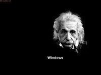
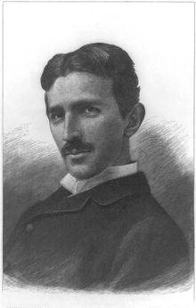
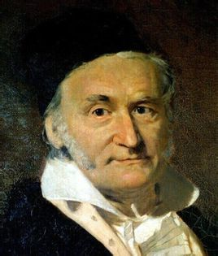
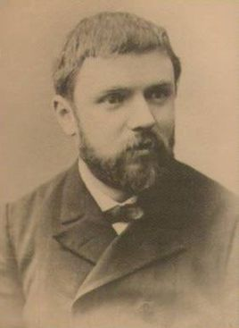
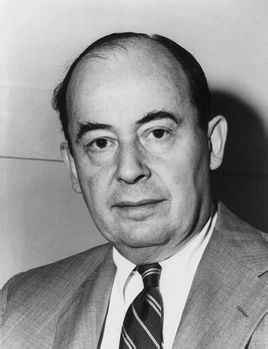
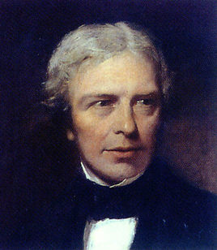
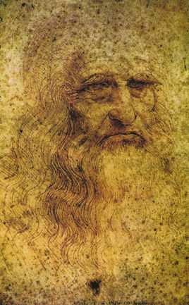

1 阿尔伯特·爱因斯坦

相对论，量子力学。
2 艾萨克·牛顿
 、
、
牛顿三大定律，微积分，金本位。
3 特斯拉

诗人、哲学家、音乐鉴赏家、养鸽专家、语言学家、吠陀专家。精通八种以上的语言，至少能阅读十一种文字，至少可以使用六种语言进行复杂的专业沟通。（英语、法语、德语、梵语、曼洛理语、拉丁语、捷克语、匈牙利语、意大利语、塞尔维亚语……）尼古拉·特斯拉已经实践的重要作品：家用交流电、无线电系统、原子弹、氢弹、中子弹、磁炸弹、隐形飞机、雷达系统、太空梭通信系统、洲际飞弹导航系统、人造卫星系统、宇航机器人、深海机器人、登陆月球、登陆火星、引力门系统（钓飞碟系统。
4 图灵
艾伦·麦席森·图灵

可计算性理论、图灵机、电子计算机、人工智能。
5 高斯
卡尔·弗里德里希·高斯

19岁，发现了正十七边形的尺规作图法、享有“数学王子”之称。高斯和阿基米德、牛顿并列为世界三大数学家。一生成就极为丰硕，以他名字“高斯”命名的成果达110个，属数学家中之最。他对数论、代数、统计、分析、微分几何、大地测量学、地球物理学、力学、静电学、天文学、矩阵理论和光学皆有贡献。
6 爱迪生
托马斯·阿尔瓦·爱迪生

世界发明大王、留声机、白炽灯
7 达尔文

神作《物种起源》。
8 居里夫人
玛丽亚·斯克沃多夫斯卡·居里。
历史上第一个两获诺贝尔奖的人。居里夫人的成就包括开创了放射性理论、发明分离放射性同位素技术、发现两种新元素钋和镭。在她的指导下，人们第一次将放射性同位素用于治疗癌症。由于长期接触放射性物质，居里夫人于1934年7月3日因恶性白血病逝世。
9 诺贝尔
阿尔弗雷德·贝恩哈德·诺贝尔

炸药的发明者，诺贝尔奖创始人。
10 亨利·庞加莱

他被公认是19世纪后四分之一和二十世纪初的领袖数学家，法国伟大的数学家、物理学家、天文学家、哲学家,被誉为“历史上最后一位全才科学家”、“上世纪罕见的科学全才”、“二十世纪领袖数学家”。庞加莱一生发表的科学论文约500篇、科学著作约30部，几乎涉及到数学的所有领域以及理论物理、天体物理等许多重要领域。
11 约翰·冯·诺依曼

计算机之父”和“博弈论之父。
法拉第
迈克尔·法拉第

他的发现奠定了电磁学的基础，是麦克斯韦的先导。1831年10月17日，法拉第首次发现电磁感应现象，在电磁学方面做出了伟大贡献。
达·芬奇
列奥纳多·迪·皮耶罗·达·芬奇

他是一位思想深邃，学识渊博、多才多艺的画家、天文学家、发明家、建筑工程师。他还擅长雕刻、音乐、发明、建筑，通晓数学、生理、物理、天文、地质等学科，既多才多艺，又勤奋多产，保存下来的手稿大约有6000页。他全部的科研成果尽数保存在他的手稿中，爱因斯坦认为，达·芬奇的科研成果如果在当时就发表的话，科技可以提前30-50年。
玻尔
尼尔斯·玻尔

玻尔通过引入量子化条件，提出了玻尔模型来解释氢原子光谱；提出互补原理和哥本哈根诠释来解释量子力学，他还是哥本哈根学派的创始人，对二十世纪物理学的发展有深远的影响。
阿基米德
哥白尼
伽利略
富兰克林